An expression language can now be used to specify custom behavior without having to write a new Java class every time. Expressions can be used in many modeling annotations such as @Enablement and in UI definitions. The number of contexts where expressions can be used will expand in future releases.
Example
In this example, the enablement of a property is defined by an expression over two other properties.
@Enablement( expr = "${ ! ControllingPropBoolean && ( ControllingPropEnum == 'YES' || ControllingPropEnum == 'MAYBE' ) }" )
ValueProperty PROP_SOME_PROP = new ValueProperty( TYPE, "SomeProp" );Example
In this example snippet from a UI definition, a content outline node label is defined by an expression that allows alternative text to be used if the Name property is null.
<node-template>
<label>${ Name == null ? "[contact]" : Name }</label>
...
</node-template>Localization support has been significantly improved. Without going too deep into API changes, there is a new @Localizable annotation that can be applied to fields of annotations or model properties. This annotation serves as a signal at build-time to the automatic externalizer. The improves extensibility of the externalizer as the items to externalize are no longer hardcodded.
The externalizer now use SHA-256 algorithm for generating resource file keys. This replaces two separate less effective approaches.
The samples now include localization fragments for a non-existing language that can be used to test localizability. The fragments are generated during Sapphire build by reversing all externalized strings. To test localizability, install samples, launch Eclipse with "-nl re" switch and open any sample editor or dialog (such as the contacts database editor).
In certain situations, it is necessary to be able to attach arbitrary objects to a model. The nature of these objects could make it awkward or difficult to implement string serialization necessary to do this via a value property.
One case where this comes up is when using Sapphire inside a larger UI. In these situations, it is frequently necessary to give the model access to some non-serializable objects to provide context.
Transient properties have the following characteristics:
Example
In this example from the contacts sample, a transient property is used to hold IContact object in ISendContactOp model element which is initialized by an editor action.
@Type( base = IContact.class )
TransientProperty PROP_CONTACT = new TransientProperty( TYPE, "Contact" );
Transient<IContact> getContact();
void setContact( IContact value );In certain situations, it is useful to define a property whose value is derived from other properties in the model or external information. A derived property is read-only, although its value can change as inputs change.
Derived properties have the following characteristics:
Example
In this example from the contacts sample, a derived property holds message body with content derived from contact object held by another property.
@DerivedValue( service = SendContactOpContentProvider.class )
@DependsOn( "Contact" )
ValueProperty PROP_MESSAGE_BODY = new ValueProperty( TYPE, "MessageBody" );
Value<String> getMessageBody();public class SendContactOpContentProvider extends DerivedValueService
{
@Override
public String getDerivedValue()
{
final ISendContactOp op = (ISendContactOp) element();
final IContact contact = op.getContact().content();
final StringBuilder buf = new StringBuilder();
...
return buf.toString();
}
}The capabilities of element properties have been revisited for this release. The most important improvement is ability to handle heterogeneous content. This means that the element property can hold multiple element types that derive from the same element type. This capability was already present for list properties and now it is available for element properties.
The second major improvement is formalizing the distinction between explicit and implied element properties. In the case of an explicit element property, the contained element must be explicitly created and it can be deleted. For implied element properties, the contained element always exists. The implied element properties are most frequently used to organize elements with high number of properties. Since the element doesn't need to be created and cannot be deleted, there is no UI manifestation for implied properties. Contrast this with explicit element properties which typically require a UI control such a checkbox, a radio buttons group or a combo to manage their state.
Example
In this example from the IContact element in the contacts sample, the
Address property is an implied element property, the Assistant is
an explicit homogeneous element property and the PrimaryOccupation is an explicit
heterogeneous element property.
Note the difference in the getter return type between explicit and implied element properties. Also notice the difference in property object type.
Heterogeneous properties must use the long form of XML binding specification (@XmlElementBinding), while homogeneous properties can use either the long or the short form (@XmlBinding).
// *** Address ***
@Type( base = IAddress.class )
@XmlBinding( path = "address" )
ImpliedElementProperty PROP_ADDRESS = new ImpliedElementProperty( TYPE, "Address" );
IAddress getAddress();
// *** Assistant ***
@Type( base = IAssistant.class )
@XmlBinding( path = "assistant" )
ElementProperty PROP_ASSISTANT = new ElementProperty( TYPE, "Assistant" );
ModelElementHandle getAssistant();
// *** PrimaryOccupation ***
@Type
(
base = IOccupation.class,
possible =
{
IJobOccupation.class,
IStudentOccupation.class,
IHomemakerOccupation.class
}
)
@Label( standard = "primary occupation" )
@XmlElementBinding
(
path = "primary-occupation",
mappings =
{
@XmlElementBinding.Mapping( element = "job", type = IJobOccupation.class ),
@XmlElementBinding.Mapping( element = "student", type = IStudentOccupation.class ),
@XmlElementBinding.Mapping( element = "homemaker", type = IHomemakerOccupation.class )
}
)
ElementProperty PROP_PRIMARY_OCCUPATION = new ElementProperty( TYPE, "PrimaryOccupation" );
ModelElementHandle getPrimaryOccupation(); The UI definition side was improved accordingly. In past releases, "with" construct was used for dealing with implied element properties, while a separate "element-property-composite" construct was used for dealing explicit element properties. In this release, both are handled with the improved "with" construct.
Example
These are the UI definition snippets from the contacts sample
for properties shown in the first example. Note how only in the case of the implied
Address property we can get away with using the default-panel
short-hand. In other cases, there are at least two cases (the element is present and is not present), so it
would not work to apply the same definition across the board.
<with>
<property>Address</property>
<default-panel>
<content>
<property-editor>Street</property-editor>
<property-editor>City</property-editor>
<property-editor>State</property-editor>
<property-editor>ZipCode</property-editor>
</content>
</default-panel>
</with>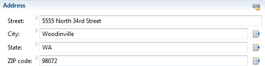
<with>
<property>Assistant</property>
<label>delegate some tasks to an assistant</label>
<panel>
<key>IAssistant</key>
<content>
<property-editor>Name</property-editor>
<property-editor>Notes</property-editor>
<property-editor>DelegatedTasks</property-editor>
</content>
</panel>
</with>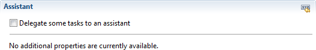
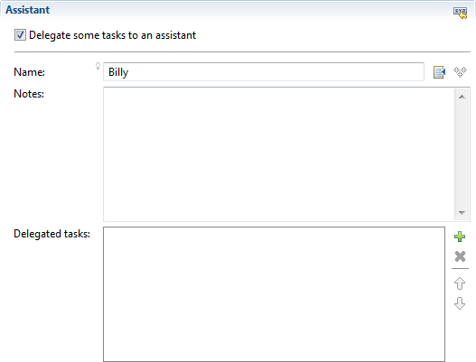
<with>
<property>PrimaryOccupation</property>
<panel>
<key>IJobOccupation</key>
<content>
<property-editor>Employer</property-editor>
<property-editor>Title</property-editor>
<property-editor>Manager</property-editor>
</content>
</panel>
<panel>
<key>IStudentOccupation</key>
<content>
<property-editor>EducationalInstitution</property-editor>
<property-editor>Program</property-editor>
</content>
</panel>
</with>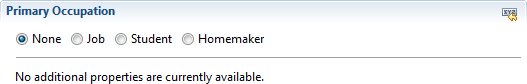
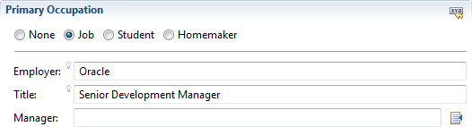
There are cases when it is convenient to be able to take a model or a part of a model and serialize it as XML without spending time specifying detailed binding. This comes up, for instance, when debugging or writing unit tests. To address this requirement, Sapphire now supports default XML binding that doesn't require any XML binding annotations to be used.
There are cases where a model does not need to be persisted. It could be transient in nature, for instance used to back a dialog or a wizard. Sapphire now supports easy creation of model elements without a backing resource. Technically, an in-memory resource is still created under the covers, but that's transparent to the developer.
This is an example from the contacts sample. Normally, the instantiate method takes a resource.
final ISendContactOp op = ISendContactOp.TYPE.instantiate();The actions API has been redesigned to make it more flexible and to allow it to be extended to property editors. This replaces an existing facility for registering browse and jump handlers. The improved API provides a consistent method for defining actions and handlers for any UI part. In particular, it is now possible to add arbitrary actions to a property editor.
An example of adding a custom action to value and list property editors:
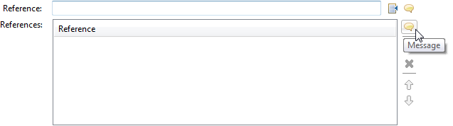See Documentation
See Migration Guide
A new action has been defined to capture the common pattern of creating an entity that is referenced by a value property.
| ID | Description | Key Binding | Contexts |
|---|---|---|---|
| Sapphire.Create | Creates the entity referenced by the property value. | SHIFT+CONTROL+ALT+c | Sapphire.ValuePropertyEditor |
Currently there are no corresponding action handlers registered by the system. To use this feature, the developer would register a custom handler at the level of a property editor.
In the following example from the contacts sample, a create action handler is added to assistant name property. When the action is activated, a new contact is created using assistant name property value.
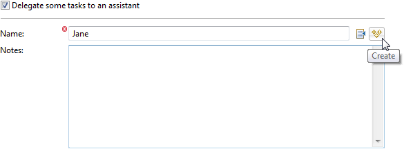<property-editor>
<property>Name</property>
<action-handler>
<action>Sapphire.Create</action>
<impl>AssistantCreateActionHandler</impl>
</action-handler>
</property-editor>It is now simple to display HTML content held by a value property. Simply add @HtmlContent annotation to the property. The SWT presentation layer will detect this annotation and render property value in a browser control. Currently, there is no support for resolving external resources (CSS, images, etc.) unless absolute URLs are used.
It is now possible to suppress the property label when editing an enum property with a vertical radio buttons property editor. This is particularly useful when enclosing the radio buttons in an explanatory context, such as a group.
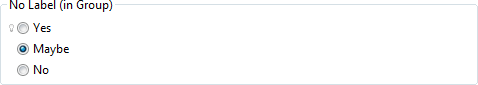<group>
<label>No Label (in Group)</label>
<content>
<property-editor>
<property>CustomSerializedWithDefault</property>
<hint>
<name>prefer.vertical.radio.buttons</name>
<value>true</value>
</hint>
<hint>
<name>show.label</name>
<value>false</value>
</hint>
</property-editor>
</content>
</group>Another useful new facility is attaching auxiliary text to individual enum items. This can be used to further explain the choices to the user.
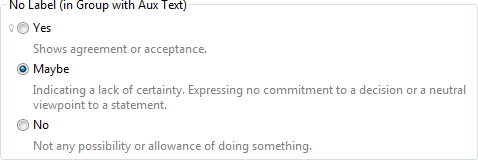<group>
<label>No Label (in Group with Aux Text)</label>
<content>
<property-editor>
<property>CustomSerializedWithDefault</property>
<hint>
<name>prefer.vertical.radio.buttons</name>
<value>true</value>
</hint>
<hint>
<name>show.label</name>
<value>false</value>
</hint>
<hint>
<name>aux.text.yes</name>
<value>Shows agreement or acceptance.</value>
</hint>
<hint>
<name>aux.text.maybe</name>
<value>Indicating a lack of certainty. Expressing no commitment to a decision or a neutral viewpoint to a statement.</value>
</hint>
<hint>
<name>aux.text.no</name>
<value>Not any possibility or allowance of doing something.</value>
</hint>
</property-editor>
</content>
</group>The SDK now includes an editor for sapphire-extension.xml file that is used for contributing extensions to Sapphire. The editor is built using Sapphire, of course.
The editor includes a rather unique summary view where the important attributes of all contributions are summarized in document format.
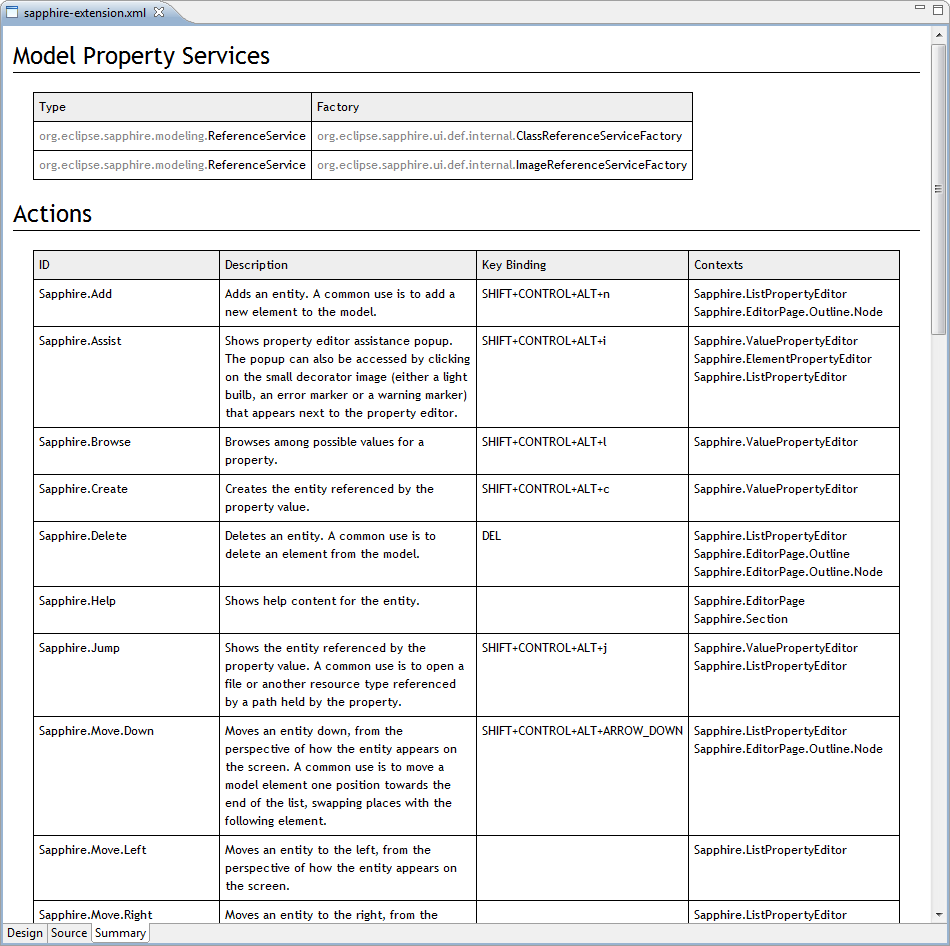
Documentation now includes a live listing of all extensions contributed to Sapphire. This is similar to the summary view in the extension editor, but documentation presents consolidated listing of all contributions.
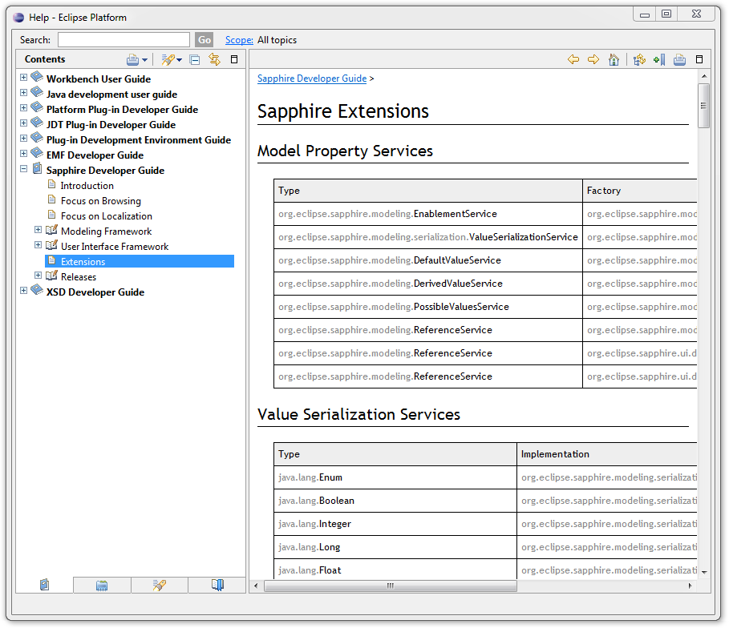